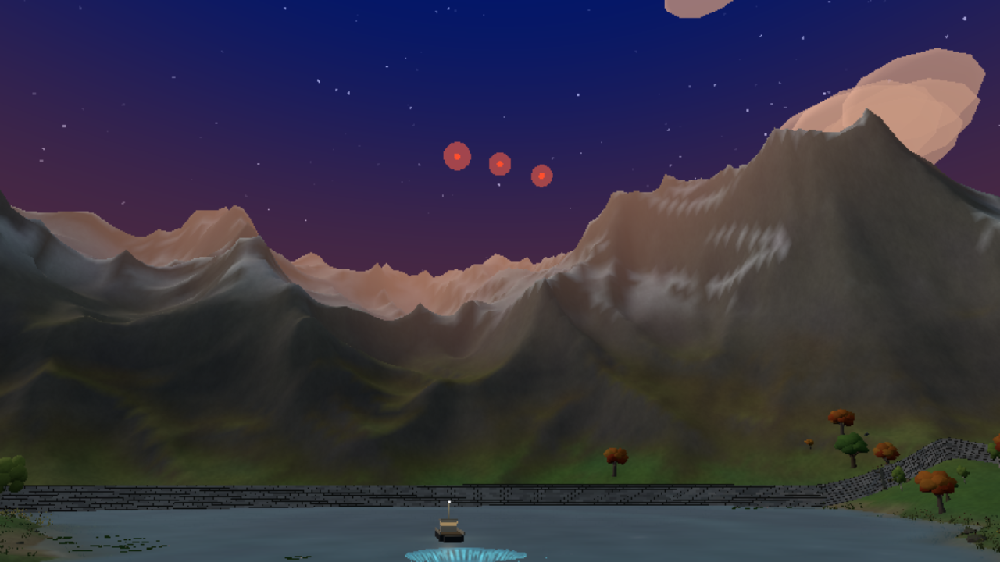
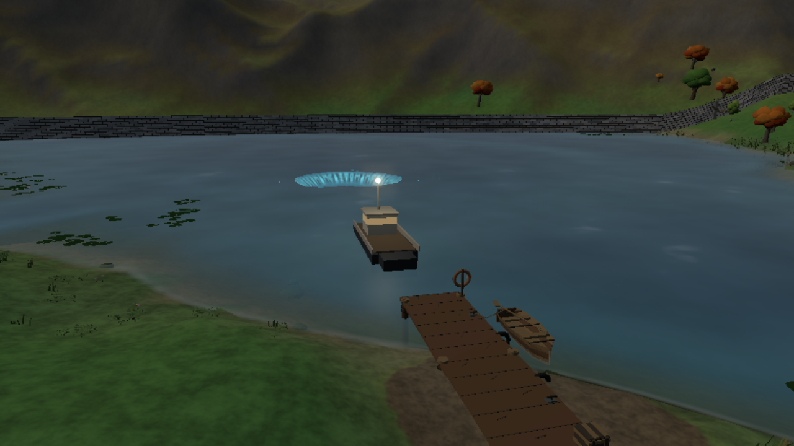
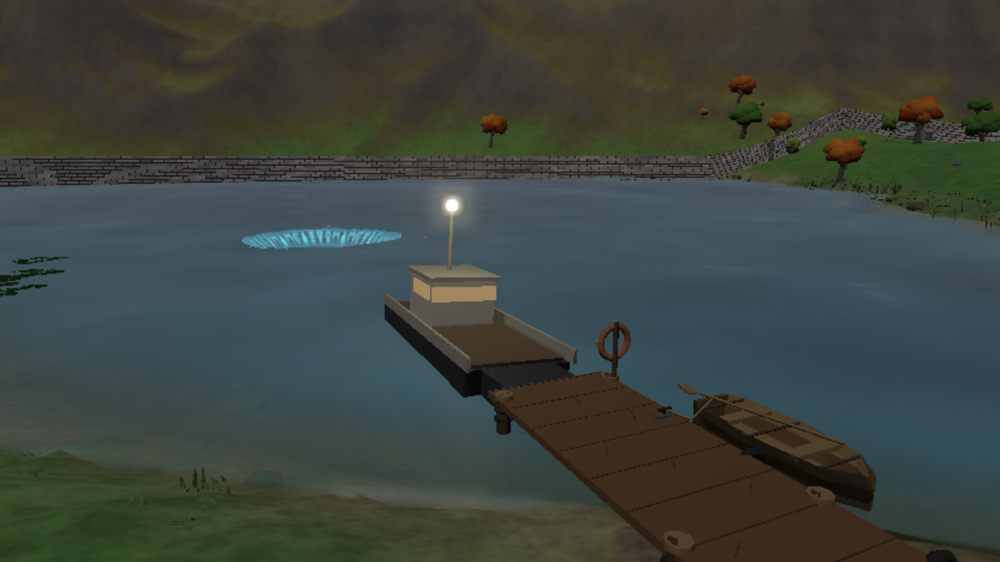
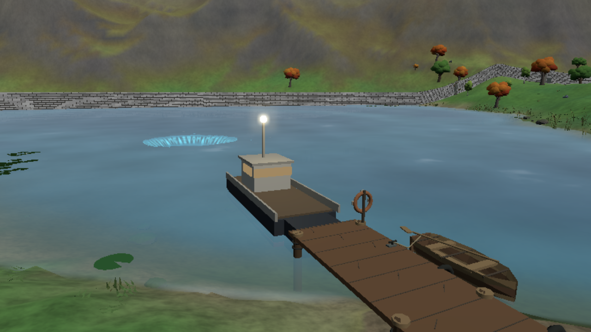
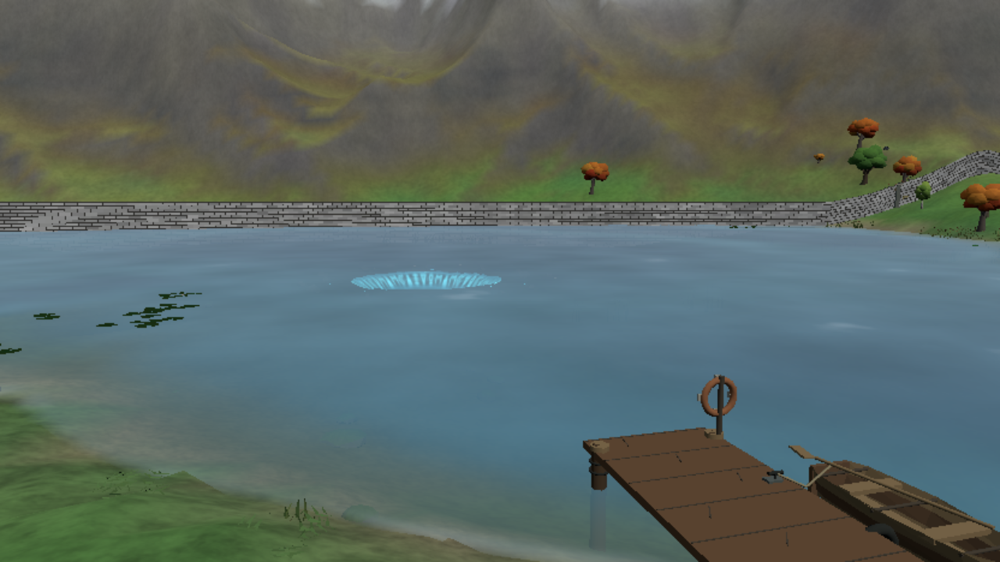

The way out (night 20). When the boat he called is due (the last push starts), three red flares go up from the end of the dock one after another and the horn sounds; a small patrol boat with a lamp on its mast comes in across the lake over about 20 seconds and noses in to the end of the dock. It waits there through the dawn, rocking, the lamp lit and the horn now and then, for him to board (GB-86). If the next alarm goes without him, it backs off and leaves. These are headless shots: the flares' and the lamp's glow on the water only shows in the game.




